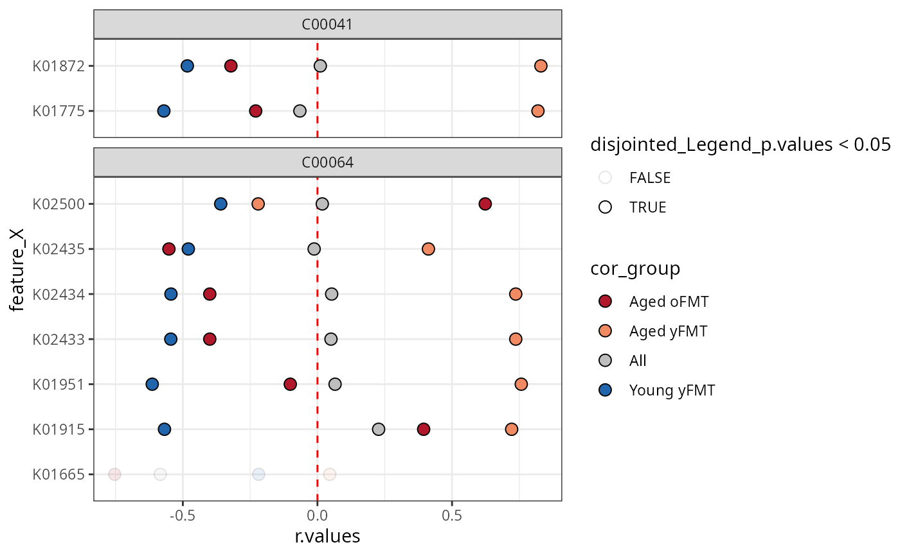
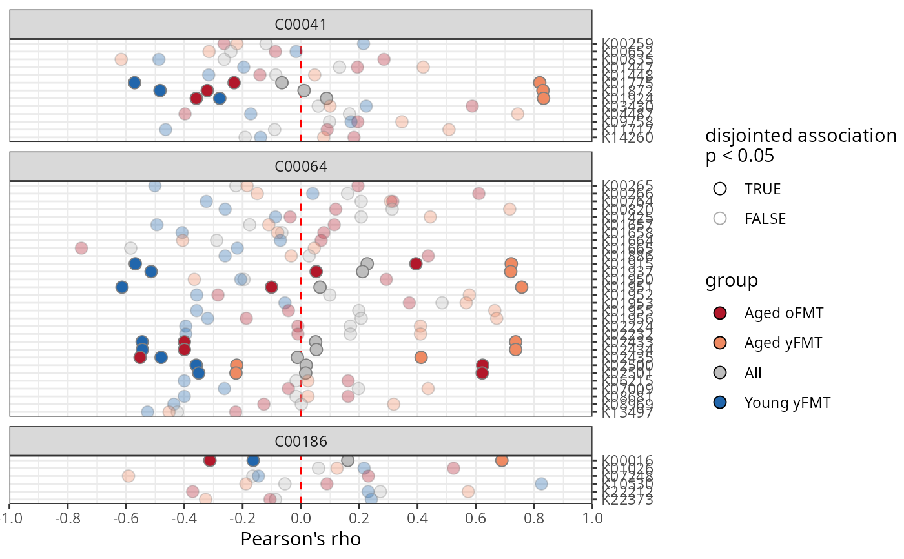

anansi: Annotation-based Analysis of Specific Interactions.
Source:R/anansi-package.R, R/anansi.R
anansi.RdThe anansi package package provides tools to prepare and facilitate integrative association analysis between the features of two data sets that are known to interact.
1. Input for anansi() with AnansiWeb() and AnansiLinkMap()
randomAnansi,
kegg_link(): Generate example inputAnansiWeb-methods, AnansiLinkMap-methods: Handle and manipulate input
2. Output and cross-compatibility
getAnansi(): Compatibility with mia and MultiAssayExperimentgetGraph(): Compatibility with igraphplotAnansi(): Plot output in the style of miaViz
Usage
anansi(
web,
formula,
groups = NULL,
metadata = NULL,
adjust.method = "BH",
verbose = TRUE,
return.format = "table",
...
)Arguments
- web
An
AnansiWebobject, containing two tables with 'omics data and a dictionary that links them. SeeweaveWebFromTables()for how to weave a web.- formula
A formula object. Used to assess differential associations.
- groups
A vector of the column names of categorical values in the metadata object to control which groups should be assessed for simple correlations. If no argument provided, anansi will let you know and still to regular correlations according to your dictionary.
- metadata
A vector or data.frame of categorical or continuous value necessary for differential correlations. Typically a state or treatment. If no argument provided, anansi will let you know and still to regular correlations according to your dictionary.
- adjust.method
Method to adjust p-values for multiple comparisons.
adjust.method = "BH"is the default value. Seep.adjust()in the base Rstatspackage.- verbose
A boolean. Toggles whether to print diagnostic information while running. Useful for debugging errors on large datasets.
- return.format
Character scalar. Should be one of"table","list", or"raw". Should the output ofanansi()respectively be a widedata.frameof results, a list containing the results and input, or a list of raw output (used for testing purposes). convenient use. (Default:"table")- ...
additional arguments (currently not used).
Value
A list of lists containing correlation coefficients, p-values and q-values for all operations.
Author
Maintainer: Thomaz Bastiaanssen thomazbastiaanssen@gmail.com (ORCID)
Authors:
Thomas Quinn contacttomquinn@gmail.com (ORCID)
Giulio Benedetti giulio.benedetti@utu.fi (ORCID)
Leo Lahti leo.lahti@utu.fi (ORCID)
Examples
# Load example data:
data(FMT_data)
# Clean and prepare the example data.
# In the example dataset, the metabolites are already cleaned.
KOs <- floor(FMT_KOs)
KOs <- apply(KOs, c(1, 2), function(x) as.numeric(as.character(x)))
KOs <- KOs[apply(KOs == 0, 1, sum) <= (ncol(KOs) * 0.90), ]
KOs <- KOs[row.names(KOs) %in% sort(unique(ec2ko$ko)), ]
# CLR-transform.
KOs.exp <- clr_c(KOs)
# Make sure that columns are features and rows are samples.
t1 <- t(FMT_metab)
t2 <- t(KOs.exp)
# Run anansi pipeline.
web <- weaveWeb(
formula = cpd ~ ko,
tableY = t1,
tableX = t2,
link = kegg_link()
)
anansi_out <- anansi(
web = web,
formula = ~Legend,
groups = "Legend",
metadata = FMT_metadata,
adjust.method = "BH",
verbose = TRUE
)
#> Fitting least-squares for following model:
#> ~ x + Legend + x:Legend
#> Running correlations for the following groups:
#> Aged yFMT, Aged oFMT, Young yFMT
library(tidyr)
# Use tidyr to wrangle the correlation r-values to a single column
anansiLong <- anansi_out |>
pivot_longer(starts_with("All") | contains("FMT")) |>
separate_wider_delim(name, delim = "_", names = c("cor_group", "param")) |>
pivot_wider(names_from = param, values_from = value)
# Only consider interactions where the entire model fits well enough.
library(ggplot2)
anansiLong <- anansiLong[anansiLong$full_p.values < 0.05, ]
ggplot(
data = anansiLong,
aes(
x = r.values,
y = feature_X,
fill = cor_group,
alpha = disjointed_Legend_p.values < 0.05
)
) +
# Make a vertical dashed red line at x = 0
geom_vline(xintercept = 0, linetype = "dashed", colour = "red") +
# Points show raw correlation coefficients
geom_point(shape = 21, size = 3) +
# facet per compound
ggforce::facet_col(~feature_Y, space = "free", scales = "free_y") +
scale_fill_manual(values = c(
"Young yFMT" = "#2166ac",
"Aged oFMT" = "#b2182b",
"Aged yFMT" = "#ef8a62",
"All" = "gray"
)) +
theme_bw()
#> Warning: Using alpha for a discrete variable is not advised.

# Using miaViz style function:
p <- plotAnansi(anansi_out,
association.type = "disjointed",
model.var = "Legend",
fill_by = "group",
signif.threshold = 0.05,
x_lab = "Pearson's rho")
p <- p +
scale_fill_manual(values = c(
"Young yFMT" = "#2166ac",
"Aged oFMT" = "#b2182b",
"Aged yFMT" = "#ef8a62",
"All" = "gray"
)) +
theme_bw()
p
